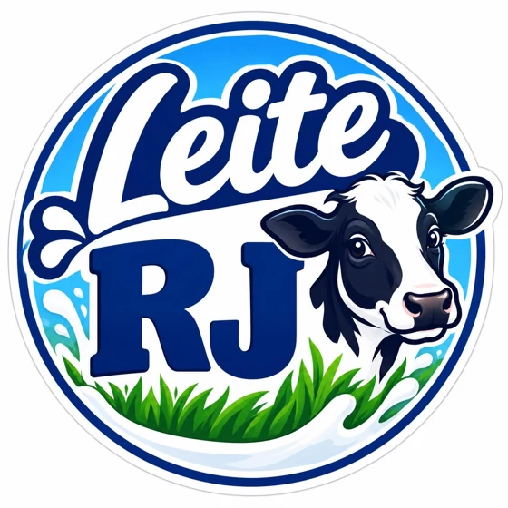

Limpeza antes da ordenha
Água e papel em cada teto, antes de ligar a ordenha.

Falar no WhatsAppVacas leiteiras de alta lactação, no sul da Bahia.
É a média das vacas do plantel. Pergunte pela pesagem da vaca que te interessa.
Escolha a vaca, veja a ordenha e combine a compra direto com a fazenda.
Quero ver as vacas disponíveisCada vaca tem produção própria. Por isso o atendimento parte da ficha dela.
A média de 30 litros é o número informado pela fazenda para o plantel. Peça a pesagem da vaca específica antes de fechar negócio.
Gado leiteiro criado no clima onde vai produzir, sem adaptação de outro estado.
Litros, número de cria e situação do bezerro. Você escolhe com número na mão.
Combine a visita e veja o plantel e a ordenha na fazenda.
Combinar uma visitaÁgua e papel em cada teto, antes de ligar a ordenha.
Galpão coberto, com a vaca contida e tranquila.
O rebanho se alimentando em grupo, em ambiente organizado.
Comprar vaca de longe costuma significar frete longo e animal que ainda precisa se acostumar com o calor daqui.
Diga o que procura e receba as vacas disponíveis, com litros, número de cria e preço.
Combine a visita e confira a vaca de perto antes de decidir.
Retire na fazenda ou combine o transporte até a sua propriedade.
A média do plantel é de 30 litros por vaca, por dia, em duas ordenhas. Cada vaca tem produção própria, então peça a ficha e a pesagem da vaca que você quer.
Informamos vaca por vaca no WhatsApp, junto com a situação do bezerro.
O preço depende da vaca e da quantidade. Mande sua mensagem e receba a lista com valores.
Sim. Combine a visita pelo WhatsApp e veja a ordenha na fazenda antes de decidir.
Fale com a gente para combinar retirada na fazenda ou transporte até a sua propriedade.
Informamos a situação sanitária de cada animal no atendimento, antes de fechar a compra.
Você recebe a lista das vacas disponíveis, com litros, número de cria e preço.